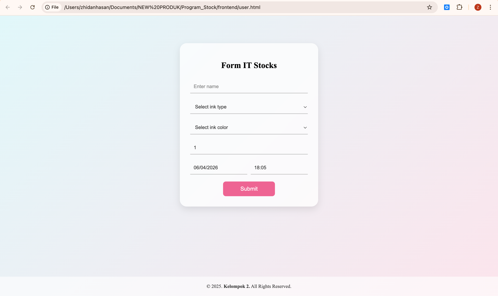

Website Stok Tinta adalah sebuah aplikasi berbasis web yang dirancang untuk membantu pengelolaan data persediaan tinta secara efektif dan terstruktur. Sistem ini memungkinkan pengguna untuk melakukan pengecekan stok, pencatatan data masuk dan keluar, serta pembuatan laporan secara real-time. Aplikasi ini dibangun menggunakan teknologi frontend seperti HTML, CSS, dan JavaScript untuk tampilan yang interaktif, serta backend menggunakan Node.js dengan integrasi database melalui Prisma untuk pengolahan data yang cepat dan aman. Fitur utama dari sistem ini meliputi manajemen data stok tinta, monitoring ketersediaan barang, serta laporan penggunaan yang dapat membantu dalam pengambilan keputusan. Dengan adanya sistem ini, proses pengelolaan stok menjadi lebih efisien, mengurangi kesalahan pencatatan, dan meningkatkan produktivitas kerja.